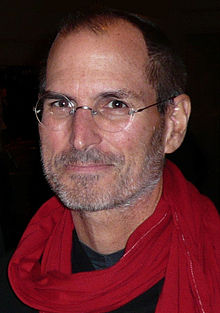

Steven Paul "Steve" Jobs was an American businessman, inventor, and
industrial designer. He was the co-founder, chairman, and chief executive
officer (CEO) of Apple Inc.; CEO and majority shareholder of Pixar; a member of
The Walt Disney Company's board of directors following its acquisition of Pixar;
and founder, chairman, and CEO of NeXT.
Jobs is widely recognized as a pioneer
of the microcomputer revolution of the 1970s and 1980s, along with Apple
co-founder Steve Wozniak. Shortly after his death, Jobs's official biographer,
Walter Isaacson, described him as a "creative entrepreneur whose passion for
perfection and ferocious drive revolutionized six industries: personal
computers, animated movies, music, phones, tablet computing, and digital
publishing."
Jobs's countercultural lifestyle and philosophy was a product of the time and
place of his upbringing. Jobs was adopted at birth in San Francisco, and raised
in a hotbed of counterculture, the San Francisco Bay Area during the 1960s. As a
senior at Homestead High School in Cupertino, California, his two closest
friends were the older engineering student (and Homestead High alumnus) Wozniak
and his girlfriend, the artistically inclined and countercultural Homestead High
junior Chrisann Brennan.Jobs and Wozniak bonded over their mutual fascination
with Jobs's musical idol Bob Dylan, discussing his lyrics and collecting bootleg
reel-to-reel tapes of Dylan's concerts.Jobs later dated Joan Baez who notably
had a prior relationship with Dylan.
Jobs briefly attended Reed College in 1972
before dropping out. He then decided to travel through India in 1974 seeking
enlightenment and studying Zen Buddhism. Jobs's declassified FBI report says an
acquaintance knew that Jobs used illegal drugs in college including marijuana
and LSD.Jobs told a reporter once that taking LSD was "one of the two or three
most important things" he did in his life.
Jobs co-founded Apple in 1976 to sell Wozniak's Apple I personal computer. The
duo gained fame and wealth a year later for the Apple II, one of the first
highly successful mass-produced personal computers.
In 1979, after a tour of
PARC, Jobs saw the commercial potential of the Xerox Alto, which was
mouse-driven and had a graphical user interface (GUI). This led to development
of the unsuccessful Apple Lisa in 1983, followed by the breakthrough Macintosh
in 1984.
In addition to being the first mass-produced computer with a GUI, the
Macintosh instigated the sudden rise of the desktop publishing industry in 1985
with the addition of the Apple LaserWriter, the first laser printer to feature
vector graphics. Following a long power struggle, Jobs was forced out of Apple
in 1985.
After leaving Apple, Jobs took a few of its members with him to found NeXT, a
computer platform development company specializing in state-of-the-art computers
for higher-education and business markets.
In addition, Jobs helped to initiate
the development of the visual effects industry when he funded the spinout of the
computer graphics division of George Lucas's Lucasfilm in 1986. The new company,
Pixar, would eventually produce the first fully computer-animated film, Toy
Story—an event made possible in part because of Jobs's financial support.
In 1997, Apple acquired and merged NeXT, allowing Jobs to become CEO once again,
reviving the company at the verge of bankruptcy. Beginning in 1997 with the
"Think different" advertising campaign, Jobs worked closely with designer
Jonathan Ive to develop a line of products that would have larger cultural
ramifications: the iMac, iTunes and iTunes Store, Apple Store, iPod, iPhone, App
Store, and the iPad. Mac OS was also revamped into macOS, based on NeXT's
NeXTSTEP platform.
Jobs was diagnosed with a pancreatic neuroendocrine tumor in 2003 and died of
respiratory arrest related to the tumor on October 5, 2011.